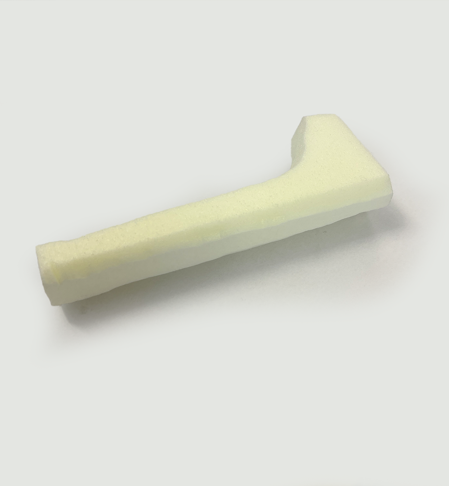
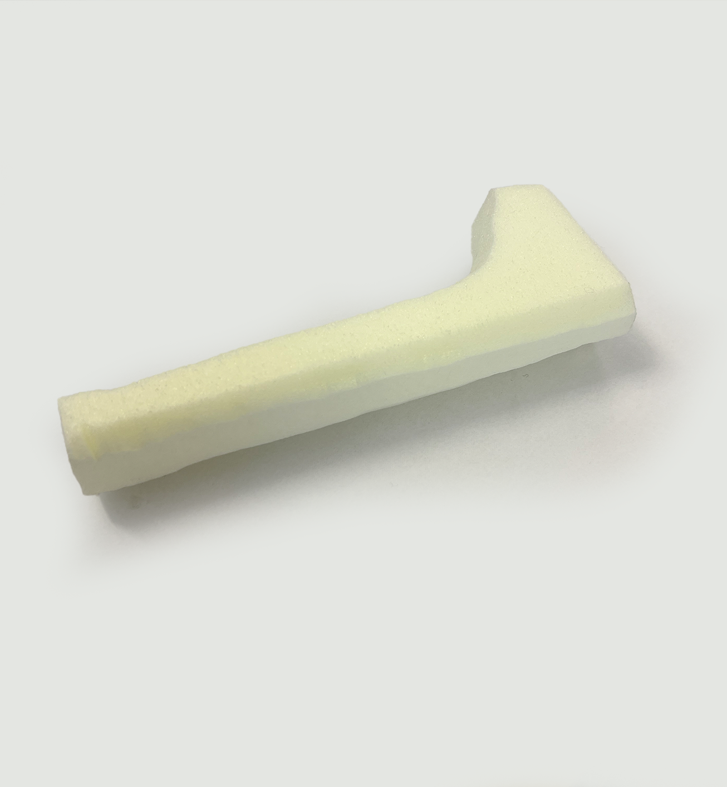

The first subject in product design is to create a door handle. My concept is to move the nameplate down to the door handle. In addition, I have added braille on the back, so that those who are blind or visually impaired can also easily find their way. The prototype is cast in aluminum and CNC is used to machine out the letters.


How It's Made

 

Mockup
In this process, the first step was to find a shape that was good to hold, as well as with the right length of the shaft. Clay works well because it is easy to cut or add material.

Digital Mockup
When you have an idea of the proportions, the next step is to create digital mockups. Here is an early example of the concept.
Prototype
Eventually, you end up with a design with good form and usability in digital form. The next step is then to create a prototype. Here the prototype is 3D printed and painted to give a better finish and result.
Aluminum Prototype
Later, when I became more experienced at school, I decided to take the prototype a step further and cast it in aluminum. Later, I used CNC to engrave text on the front and braille on the back.